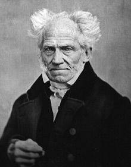

1788-1860 · The 1800s
← The philosophy map · About Schopenhauer
If we always want more, can getting what we want ever make us happy?
For months you dream about a new phone. The day it arrives, you're thrilled. A week later it's just a phone, and you've started looking at the next model. Two hundred years ago, a gloomy German thinker said this little cycle explains the whole of human life.
Read one part at a time. After each part, close your eyes and answer the question before you check.
Arthur Schopenhauer was born in 1788 in Danzig, which is now Gdańsk in Poland. His father was a rich merchant who wanted his son to go into business. Arthur tried, but he hated it. After his father died, he went to university instead and studied Plato and Kant. He also read early translations of ancient Indian texts. Few European philosophers of his time took Indian and Buddhist ideas so seriously.
What did Schopenhauer study that made him unusual among European philosophers?
In 1818 he published his great book, The World as Will and Representation. Almost nobody read it. In Berlin he chose to give his lectures at exactly the same hour as Hegel, the most famous philosopher in Germany. Almost all the students went to Hegel, and Schopenhauer's lecture hall stayed nearly empty. He never forgave Hegel. Fame arrived only in 1851, with a popular book of essays.
Why did hardly anyone come to Schopenhauer's lectures in Berlin?
Schopenhauer said that behind everything in the world there is a blind force he called the 'will'. It drives plants to grow, animals to hunt and people to want, want, want. When we don't have what we want, we suffer. When we get it, we soon feel bored. The only relief, he said, comes from art, especially music, and from compassion for others. He died in Frankfurt in 1860.
Which two feelings does life swing between, according to Schopenhauer?
Each word is hidden in a sentence. Read it aloud and say what you think the bold word means. Then reveal and compare.
Schopenhauer said some things keep the cycle of wanting going, and others give us a short escape from it. Decide together, then reveal.
Now you: explain Schopenhauer's idea to a friend who has never heard of him. Speak for about a minute. Use the starters if they help.
A scientist offers you a pill. If you take it, you will never want anything more than you already have. You'll feel calm and content for the rest of your life, but you'll never again feel the excitement of longing for something, chasing it and getting it.
Tap two cards. Use the timer to keep going, and use at least two of the phrases above.
No looking back. Answer from memory first, then check.
How did Hegel think history moves forward?
What was Rousseau's big idea about people and society?
What was Spinoza's big idea about God and Nature?
What does Avicenna's flying man show, according to Avicenna?
From memory, out loud. Then check.
1. What did Schopenhauer believe drives all of life, and what gives us relief from it?
2. Why did Schopenhauer's lectures in Berlin fail?
3. What are the four steps in Schopenhauer's cycle of desire?
4. What does 'crave' mean? Give an example.